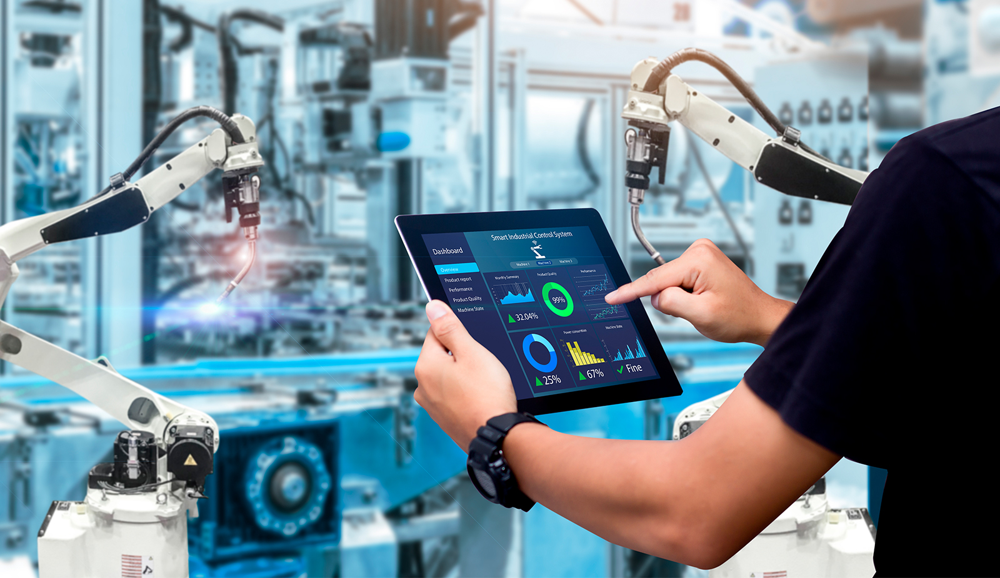

Fábrica Inteligente
La fábrica inteligente representa la materialización completa de la Industria 4.0, integrando todas las tecnologías habilitadoras digitales en un ecosistema productivo altamente automatizado, conectado y optimizado. En este entorno, máquinas, sistemas y productos se comunican entre sí en tiempo real.
La producción se vuelve flexible, eficiente y personalizada, capaz de adaptarse dinámicamente a cambios en la demanda, optimizar recursos energéticos y predecir necesidades de mantenimiento antes de que ocurran fallos, maximizando la disponibilidad operativa.
Pilares de la fábrica inteligente:
- Interconexión total mediante IoT industrial
- Toma de decisiones basada en datos en tiempo real
- Flexibilidad para personalización masiva
- Mantenimiento predictivo mediante IA
- Optimización energética y sostenibilidad